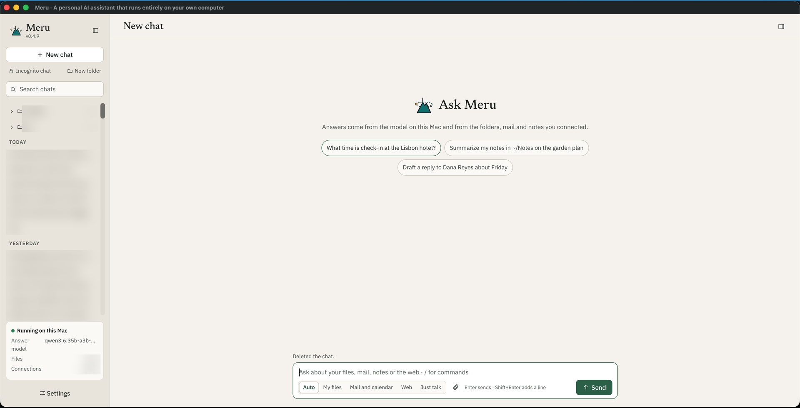

Meru मेरु
A personal AI assistant that runs entirely on your own Mac.
In some Eastern traditions, Meru is the cosmic mountain that the sun, moon and stars turn around.
v0.4.19 · October 2026 · aarora79.github.io/meru
github.com/aarora79/meru
Scan for the code
The question
An assistant helps most with the things you'd least like to hand over
- Your mail, notes, files and photos are what a question like "when is the dentist?" or "what did I decide about the garden?" needs.
- A hosted assistant reads them on its provider's servers, under terms you don't set and that can change.
- Meru runs on your Mac. Open-weight models answer there, beside your data, and nothing you ask goes to a model provider.
What you use
Meru.app, a desktop app on your Mac

- Ask across your own things: folders, Gmail and Google Calendar, notes in Obsidian or Apple Notes, and the web.
- Attach a file or picture, or press the microphone and speak.
- Pick where it looks: Auto, My files, Mail and calendar, Web, or Just talk.
- File, tag and search your chats, or start an incognito one.
The app talks to merud, a program on your Mac that runs the models through a local model server, Ollama today, and keeps your data. meru chat gives you the same in a terminal.
What it does
Questions it answers from your own things
Your files
Searches the folders you choose, Markdown, PDFs, HTML and code, and cites the file and line it used.
Your mail and calendar
Reads Gmail, Google Calendar and Drive through your own Google account, and asks before it sends or changes anything.
Your notes
Searches Obsidian, and reads Apple Notes live and read-only.
Your pictures
Finds pictures in your folders by words, or like one you attach, and a model that can see reads them.
The web
Searches through a search engine on your Mac, reads pages, and cites the address.
Writing
Saves notes, drafts and pages it writes into one folder, ~/meru-output.
It learns
An assistant that remembers who you are, in files you can read
- Memories are Markdown files in
~/.meru/memory/, one per fact, in folders such asme,people,projectsandpreferences. What you tell it about yourself goes into every prompt. - You see and change them in Settings, About you, or with
/me; forget one with a key press, or delete the file. - Past chats help later ones. Meru summarizes a chat once it goes quiet, and finds earlier chats that bear on a new question.
- Skills teach it how to do a task: plain writing, explainer pages, web research and file research ship with it, and you can add your own.
Privacy
What leaves your Mac
| Data | Where it goes |
|---|---|
| Your questions and Meru's answers | Nowhere. The models run on your Mac. |
| Your files, notes and pictures | Indexed into a file on your Mac and read there. |
| Telemetry, crash reports, update checks | None, ever. |
| Web searches | The search words go to the engines your own SearXNG asks. |
| Web pages | Public addresses only. Meru asks first for an address no search or question of yours gave, unless you trusted that website. |
| Mail and calendar | Read through your own Google account, when you connect it. |
| Your voice | Turned into text on your Mac by Whisper; no recording is kept. |
You decide
You stay in charge of what it does
Before it acts
- Each tool is Off, Ask or Allow.
- Sending, deleting or changing asks you on a card, every time; you can edit the request first.
- Reading a website you didn't ask about asks too, or you trust that site for the chat or always.
After
- Every tool call is in a log you can read:
/log, or Settings, Activity. - Chats are plain files in
~/.meru/sessions; delete one and it's gone. - An incognito chat leaves no transcript.
Which Mac
Answer quality and speed by Mac memory
| Mac memory | Answer model | Passed | First word, median | Whole answer, median |
|---|---|---|---|---|
| under 32 GB | MiniCPM5-2B | 68% | 11.6 s | 13.1 s |
| 32 to 47 GB | gemma4:26b-a4b-it-qat | 80% | 17.6 s | 18.3 s |
| 48 to 63 GB | qwen3.6:35b | 89% | 5.6 s | 10.4 s |
| 64 GB or more | qwen3.6:35b-a3b-mxfp8 | 89% | 4.1 s | 6.5 s |
The installer picks the model for your Mac's memory. 150 results per model set, 3 runs of 50 questions about the author's own files, notes, mail and calendar, which aren't published; your numbers will differ. Times include searching and tool calls. Source: docs/benchmarks/results.md, 28 September 2026.
Getting started
On your Mac in a few minutes
- Download the Mac installer from the latest release, open the disk image, and open "Install Meru.app". It sets up the model server and the models for your Mac, web search, the folders Meru reads, and
merud, step by step in a window. - Or use one line in a terminal:
curl -fsSL https://github.com/aarora79/meru/releases/latest/download/install.sh | bash - Then connect what you want in Settings, Connections: Google, Obsidian, Apple Notes, speech to text. Each is off until you turn it on.
Macs with Apple silicon. Meru never checks for updates; run the installer again for a new release, and it keeps your settings and memories.
Day to day
Small things that add up
Speak
Press the microphone, speak for up to a minute, and check the words before you send them.
Continue
An answer that stops short gets a Continue button that picks up where it stopped.
Long reading
A question can read dozens of web pages; Meru sizes the model's working memory for your Mac.
Model sets
Switch between named sets of models, such as a fast one and a careful one, while Meru runs.
Usage
A Usage screen charts your questions, answer times and tool calls, from data on your Mac.
Scripts
meru run --json lets a script ask Meru and read each step as a line of JSON.
Honest limits
What Meru does not do yet
By design
- No phone app, no account, no sync between machines
- One person per machine
- No cloud model to fall back on when the local one struggles
Not yet
- Pre-alpha, v0.4.19
- Slower than a hosted assistant: the first word takes 4 to 18 seconds
- Scheduled jobs, such as a morning brief, come in v0.5
- macOS first; Linux supported; Windows untested
Under the hood

Everything inside the dashed line runs on your Mac
The models, your data, the search index, your chats and memories. Only the tools you allow reach outside.
Built in the open
Free and open source, under the Apache License 2.0.
We're happy to take contributions: see the issue list. Ideas and bug reports start there too.
github.com/aarora79/meru · aarora79.github.io/meru
github.com/aarora79/meru
Scan for the code